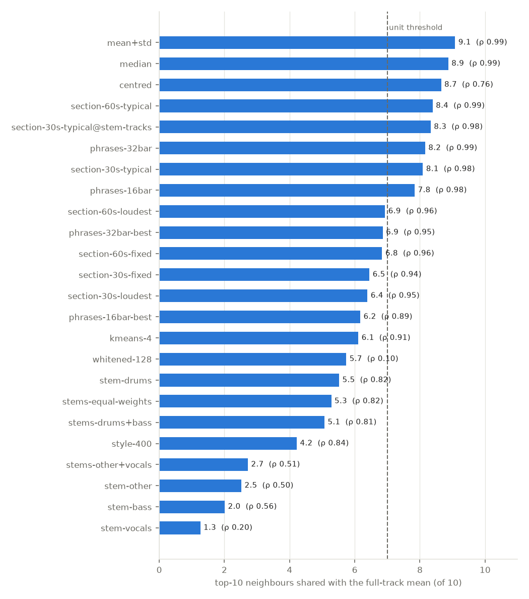
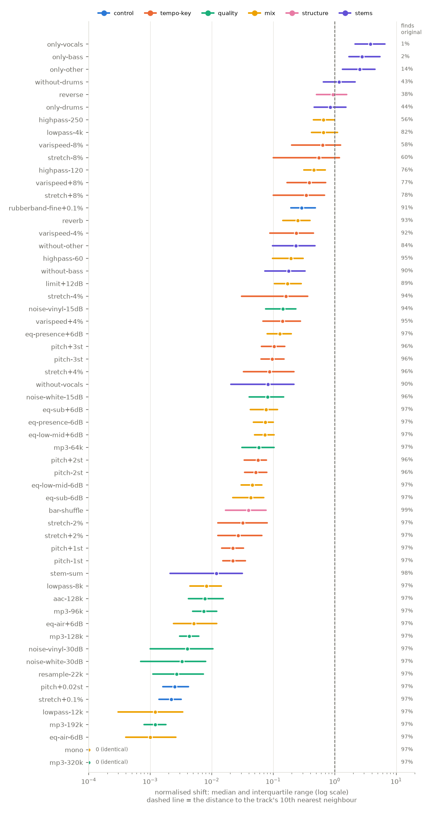
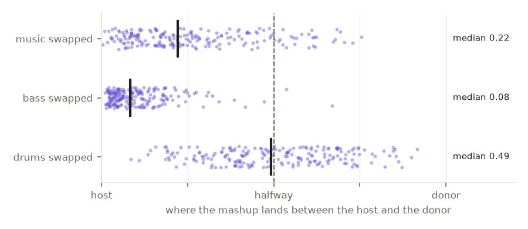
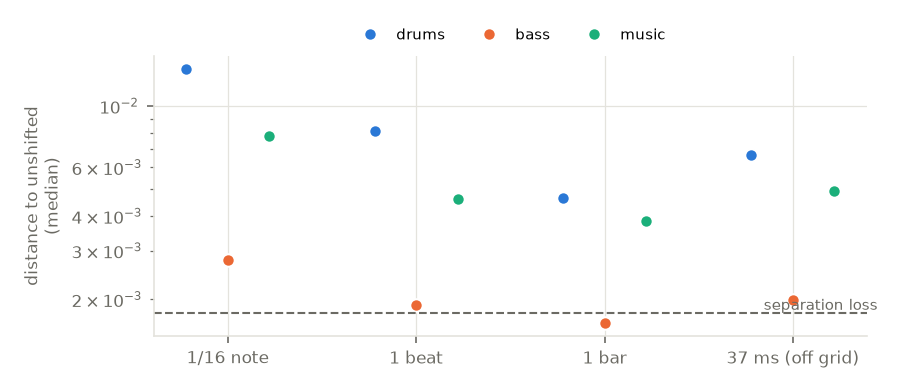
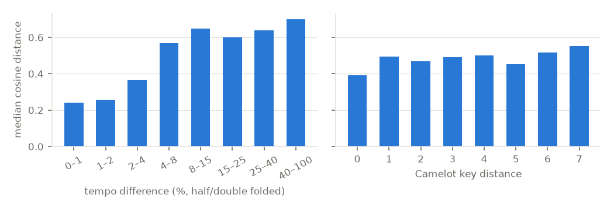

What Discogs-EffNet hears
What does the embedding behind the similarity search treat as similar? We measured
discogs_multi_embeddings-effnet-bs64-1 on full tracks from the AKIN catalog by changing the audio
(tempo, key, EQ, codecs, stems) and watching where the embedding moved. Short answer: it mostly hears
the drums, the tempo class and the spectral balance below 8 kHz; key, melody, vocals and arrangement
barely count.
What the model listens to
Normalised shift is used throughout: the distance a change moves a track, divided by the distance from that track to its own 10th nearest neighbour. A shift of 1 moves a track as far as its 10th neighbour.
Drums first
Removing the drums moves a track further than any mix change (shift 1.17; found again only 43 % of the time). Swapping in another track's drums lands the mashup halfway to that track.
Bass and music much less; vocals least
Swapping the bass barely moves the mashup (0.08); swapping the music stem moves it to 0.22. Removing the vocals moves a track about as much as a 2-semitone pitch shift.
Tempo is encoded; key barely
An 8 % time-stretch moves a track 0.34–0.55 and loses it for 22–40 % of tracks. ±3 semitones moves only 0.10, and key distance is unrelated to embedding distance (ρ 0.05).
Below 8 kHz matters; above is invisible
High-pass at 120–250 Hz or low-pass at 4 kHz are among the largest changes. Low-pass at 8 or 12 kHz, MP3 ≥ 96 kbps and mono are near zero: the model hears 16 kHz mono only.
Order is mostly ignored
Shuffling the bars barely moves a track (0.04), and stem offsets stay ≤ 0.08. Reversing it moves it 0.94. The mean embedding is a texture summary: which sounds occur, not in which order.
Genre and tempo explain half
Across 300,000 catalog pairs, shared genre and BPM difference explain R² 0.52 of the distance. Key, label and artist add almost nothing once genre is known.
Medians over 200 tracks (removal) and 200 host–donor pairs (swaps). “Music” = the other and vocal stems together.
Track representations
How many of the full-track mean's top-10 neighbours each representation keeps. Descriptive by choice: this measures how different each representation is, not which is better.

| Representation | Top-10 shared | ρ (all pairs) |
|---|---|---|
| mean ⊕ std | 9.1 | 0.99 |
| median | 8.9 | 0.99 |
| centred (catalog mean removed) | 8.7 | 0.76 |
| section, 60 s, most typical | 8.4 | 0.99 |
| phrases, 32 bars (grid tracks) | 8.2 | 0.99 |
| section, 30 s, most typical — Part 2 unit | 8.1 | 0.98 |
| phrases, 16 bars (grid tracks) | 7.8 | 0.98 |
| section, 30/60 s, loudest or fixed position | 6.4–6.9 | 0.94–0.96 |
| best-matching phrase / k-means (4) multi-vector | 6.1–6.9 | 0.89–0.95 |
| PCA-whitened (128) | 5.7 | 0.10 |
| style probabilities (400) | 4.2 | 0.84 |
| stems, unit only (200 tracks): drums / bass / other / vocals | 5.5 / 2.0 / 2.5 / 1.3 | 0.20–0.82 |
- The mean is stable. Median and mean ⊕ std keep 9 of 10 neighbours; a track's patches are compact enough that its centre is well defined.
- A well-chosen 30 s keeps most of the neighbourhood. The most typical 30 s (closest to the track's own mean) keeps 8.1 of 10; a fixed position or the loudest window keeps only 6.4–6.9.
- Whitening reshuffles everything (ρ 0.10): it throws away the dominant axes (genre, tempo), and its new neighbours differ more in BPM (median 2.9 % vs 1.9 %).
- Stems. On the same 200 tracks, the 30 s section itself keeps 8.3 of 10, so the drop to 5.5 and lower comes from the separation. All four stems together (5.3) are no closer to the mix than the drums alone.
- Crates. Nearly every alternative loses more same-crate neighbours than it gains (style: 16.6 % lost vs 8.8 % gained). Only a hint without ground truth, but the full-track mean is at least as close to how the tracks were crated as anything tried.
What moves an embedding
Each change applied to the track's most typical 30 s. “Finds original” = the changed audio's nearest neighbour in the 500-track reference set is the original; the baseline is 96.7 % because 28 reference tracks have an exact duplicate in the catalog.

| Group | Change | Shift (median) | Finds original |
|---|---|---|---|
| Controls | stretch +0.1 %, pitch +0.02 st (sox) | 0.002 | 97 % |
| Rubber Band R3 +0.1 % | 0.29 | 91 % | |
| Tempo | stretch ±2 % / ±4 % / ±8 % | 0.03 / 0.09–0.16 / 0.34–0.55 | 97 / 94–96 / 60–78 % |
| varispeed ±4 % / ±8 % | 0.14–0.24 / 0.39–0.63 | 92–95 / 58–77 % | |
| Key | pitch ±1 / ±2 / ±3 semitones | 0.02 / 0.05 / 0.10 | 96–97 % |
| Codec | MP3 320 / 192 / 128 / 96 / 64 kbps | 0 / 0.001 / 0.004 / 0.007 / 0.058 | 97 % |
| AAC 128 kbps | 0.008 | 97 % | |
| Noise | white / vinyl at 30 dB SNR; at 15 dB | 0.003–0.004; 0.08–0.14 | 97 %; 94–96 % |
| Filters | low-pass 12k / 8k / 4k | 0.001 / 0.008 / 0.65 | 97 / 97 / 82 % |
| high-pass 60 / 120 / 250 Hz | 0.19 / 0.45 / 0.66 | 95 / 76 / 56 % | |
| EQ ±6 dB | sub · low-mid · presence · air | 0.04–0.08 · 0.05–0.07 · 0.07–0.13 · 0.001–0.005 | 97 % |
| Dynamics, space | limiter +12 dB · reverb | 0.17 · 0.25 | 89 % · 93 % |
| Stereo | mono | 0 | 97 % |
| Structure | bar shuffle · reverse | 0.04 · 0.94 | 99 % · 38 % |
- Slowing down moves more than speeding up (stretch −8 %: 0.55, +8 %: 0.34; varispeed likewise). The cause was not examined; one candidate is that tempo classes are unevenly spaced in the catalog.
- EQ boosts move more than cuts of the same size, and presence (2–5 kHz) is the most sensitive band below 8 kHz. A 60–120 Hz high-pass, which also removes the kick's body, matters more than sub-bass EQ.
- Codecs are harmless at normal bitrates. Only 64 kbps MP3 is measurable, and it never changes retrieval.
- Excluded where the change did not happen: resample-22k on 67 tracks with nothing above 11 kHz, and the limiter on 73 masters whose crest factor dropped by less than 1.5 dB.
Trap: the stretch engine can move the embedding more than the tempo does
Rubber Band's R3 engine moved embeddings by 0.29 at an inaudible 0.1 % tempo change: over 100× more than sox WSOLA (0.002), and almost as much as a real 8 % stretch. All tempo and pitch numbers here use sox. Any tempo matching or augmentation before embedding should measure its own artefact first.
Stem removal, swaps and offsets
htdemucs on the 30 s unit plus 6 s margins. The stem-sum control (the four stems added back together) shifts by only 0.012, so separation artefacts are small next to the effects below.
| Stem | Without it | Finds original | Only it | Finds original |
|---|---|---|---|---|
| drums | 1.17 | 43 % | 0.84 | 45 % |
| other | 0.23 | 85 % | 2.55 | 14 % |
| bass | 0.18 | 91 % | 2.80 | 3 % |
| vocals | 0.08 | 90 % | 3.78 | 1 % |
Swaps · 200 host–donor pairs

Donor stem tempo-matched with sox, cut to the host's bars, level-matched; pairs within ±15 % BPM. Nearer the donor: drums 49 %, music 13 %, bass 1 %.
Offsets · 50 tracks with a beat grid

Distance to the unshifted recombination of the same stems. The largest (drums by a 1/16 note, 0.0136) is 0.074 normalised; a one-bar bass offset is indistinguishable from separation loss (0.0018). The assumption holds: offsets barely matter.
What explains closeness across the catalog
AKIN's stored means match recomputed ones (40 tracks, min cosine 0.999). 300,000 sampled pairs.

| Factor | ρ with distance | Median dist. same / diff. |
|---|---|---|
| shared genre | −0.67 | 0.24 / 0.62 |
| BPM difference (folded) | +0.62 | — |
| shared crate | −0.36 | 0.27 / 0.47 |
| energy difference | +0.18 | — |
| shared label (843 pairs) | −0.08 | 0.19 / 0.36 |
| shared artist (631 pairs) | −0.06 | 0.16 / 0.47 |
| Camelot key distance | +0.05 | — |
| Linear probe | Score | Chance |
|---|---|---|
| genre (23 classes) | 0.48 | 0.04 |
| label (40 classes) | 0.34 | 0.03 |
| key (24 classes) | 0.16 | 0.04 |
| mode (major/minor) | 0.57 | 0.50 |
| BPM (R²; MAE 21 vs 35 BPM) | 0.46 | 0 |
Balanced accuracy, cross-validated. BPM within 4 % (folded) for only 24 % of tracks: a broad tempo class, not an exact value.
- Shared label and artist have small ρ only because such pairs are rare; when they occur they are the closest pairs of all (0.19, 0.16), as the training predicts (artist loss weight 0.6).
- Joint model: shared genre and BPM difference explain R² 0.52 (standardised coefficients −0.46 and +0.28); energy adds +0.17; key, label and artist almost nothing.
What this means for fomoplayer
Previews vs full tracks
A 30 s excerpt reproduces 8 of 10 full-track neighbours when it is the track's most typical part, 6.4 at a fixed position. Codec quality is irrelevant above 96 kbps. With full tracks, embed the most typical window; it also cuts stem-separation time to one region.
Search is drum- and tempo-led
Neighbours share genre, tempo class and drum sound; key, melody and vocals barely count. A key- or melody-aware search needs another feature: catalog key, or a separate embedding of the “other” stem.
Pre-processing must be clean
Keep the input band ≥ 8 kHz and don't high-pass. Never time-stretch with a phase-vocoder engine before embedding.
Representations
Median or mean ⊕ std are drop-in equivalents of the mean. Whitening or the style head would change the search substantially and need user evaluation (design D) first.
Caveats
- One genre dominates the catalog (70 % of the genre-labelled tracks the probe used), so catalog-wide correlations partly reflect where other genres sit in tempo. The samples are stratified by crate and genre.
- The Part 1 stem representations cover the 30 s unit, not the whole track, and were embedded before the per-track stem gain correction (stem sums were 2–21 % quieter than the mix). Swaps, offsets and stem changes use corrected stems.
- Part 1 has no ground truth by design: “shared with the mean” measures difference, not quality.
- Demucs artefacts are part of every stem result; the stem-sum control (0.012) bounds them.
- The model only hears 16 kHz mono, so stereo-width and above-8 kHz results are zero by construction.